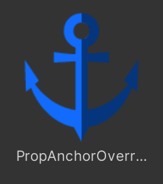
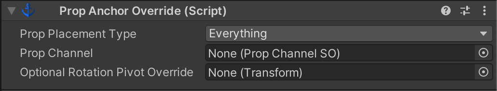
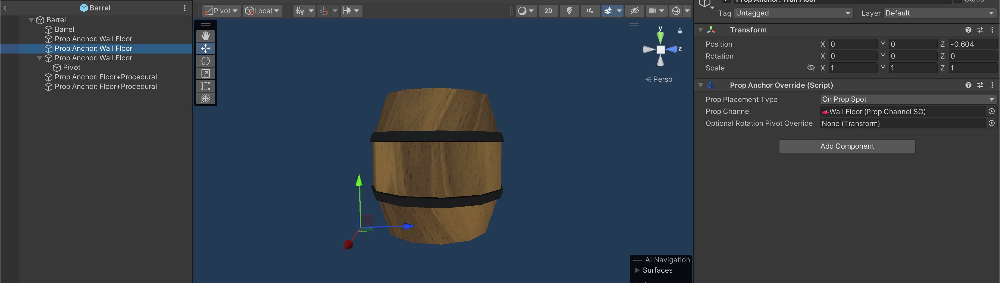

Prop Anchor Override

This component allows you to override the pivot point that is used when placing a prop. In situations where your prop’s pivot is centered but you need it in a different spot without having to edit the model, you can add this component to a child GameObject of your prop prefab and position it to represent your new pivot point. You can have as many of these in your prop prefab as you need.

Prop Placement Type
Determines which kinds of Prop Spots this Anchor Override will be used for.
Prop Channel
If the Prop Placement Type “On Prop Spot” flag is set, this Anchor Override will only apply when placed on prop spots using the same channel.
Optional Rotation Pivot Override
If rotation is being applied to your prop placement (See link) and you want the rotation to use a different pivot point than the anchor override, assign a Transform that represents the new pivot. This is useful in cases where you want a prop placed against a wall, but want it to be able to rotate around its central Y axis instead of rotating around the wall anchor.

In this example, I want the barrel to be able to be placed on the ground against a wall, so I’ve added a Prop Anchor Override and moved it to the ground behind the barrel, and assigned it to my “Wall Floor” prop channel.